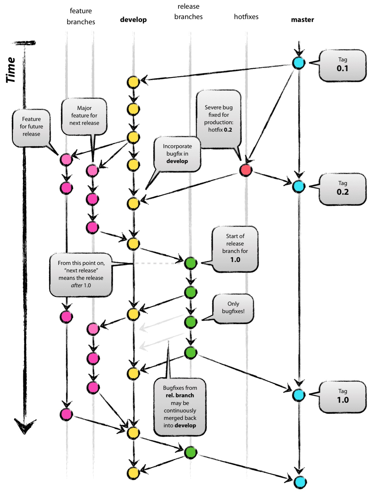

使用分支模型为项目加速
Gitflow分支模型
项目选定了gitflow的分支模型，详细可参考A successful git branching model

发布版本(release)
maven项目发布
为了更好的使用git-flow管理分支模型，这里使用了一款gitflow的maven插件来进行项目的发布和部署
- 本地develop分支上执行
mvn gitflow:release-start, 新建release分支。注意这里版本号要指定，目前支持的是形如 1.0.8.OSS 格式的版本号,参考semantic versioning，新开分支后，检查全部文件的版本号，是否生效(主要检查相关文档的版本号，需要手工修改，全部替换为当前要发的版本号:1.0.8.OSS); - 将release分支push到远端，
git push -u origin release/1.0.8.OSS，触发travis-ci的发布操作,publish到nexus仓库,以及发布maven-site到github-pages。(release到nexus仓库发布仅在release分支上触发，其他分支屏蔽；这里如果第一次发布成功了，再次重发，需要修改版本号重复执行步骤1)。 - nexus发布成功后，证明此次release代码OK。本地执行
mvn gitflow:release-finish.本地的release分支会被删除，并打出tag， - push tag到远端
git push origin tag_name，触发tag的发布，tag不做nexus的发布操作，只做test_and_build 和uploading release的产物，如工具类的jar到github。push之后，在github会产生一个release。 - tag发布完毕后，再回到本地，进行善后清理操作，将develop和master的提交，推到远端，release分支的删除操作，也推到远端。
操作样例：
mvn gitflow:release-start # 如maven版本号确定为1.0.8.OSS
git push -u origin release/1.0.8.OSS # 推送远端触发nexus发布
mvn gitflow:release-finish
git push origin v1.0.8.OSS
git push origin develop
git push origin master
其他项目发布
以上发布流程，覆盖maven项目的构建发布，如果项目不是maven项目，则可通过
git flow(git-flow安装使用教程)来做项目的发布操作。包括后面的hotfix以及feature开发，都用到了git flow
git flow release start v1.0.8新开发布分支git push -u origin release/v1.0.8推送到远端git flow release finish -m "release" v1.0.8注意-m后的注释不能带空格，参见Release tag message flaggit push origin v1.0.8将tag推送到远端- 进入github进行手工发布,如release,
Draft a new release,选定tag版本发布即可。
Travis发布
通过travis ci再项目构建完毕后，发布产物到github的release页面，用户可以通过release来直接获取项目的构建产物。
相关配置
# v is refered to gitflow-maven-plugin:versionTagPrefix
before_deploy:
- export PROJECT_MAVEN_VERSION=${TRAVIS_TAG/v/}
deploy:
provider: releases
api_key: $GITHUB_GIT_SERVICE_TOKEN
file: "target/oss-configlint-${PROJECT_MAVEN_VERSION}.jar"
skip_cleanup: true
on:
tags: true
after_deploy:
- echo "deploy finished!"
- 确保
skip_cleanup: true,否则travis CI会删除构建产物 - 加密token有两种方式，一种是在setting界面来配置token，一种是指定secure的token: `api_key:
secure: XXXXXXX` - 如果想用通配符指定多个目录，需要增加
file_glob: true,然后file: dir1/* - 使用
before_deploy和after_deploy来扩展deploy的前后的准备和清理工作 - 定制deploy条件，可参照下面的内容。
- 将本地的项目tag版本推送到远端，执行
git push origin tag_name会触发一次travis ci的构建；或者在github的release标签页，标记tag，然后发布release。
触发条件配置
repo描述仓库的区块:(owner_name/repo_name,e.g,test/hello-world)branch分支的名称，如果不指定，默认是app- 或者是master分支。若不确定哪些分支可以做release操作，可以指定all_branch:true实现branch: **，可以同时和其他条件配合使用jdk, node, perl, php, python, ruby, scala, go用来指定不同语言的多版本。condition用来设定bash的条件，必须是一个字符串，会被传递到bash的表达式，形如：if [[ <condition> ]]; then <deploy>; fi,条件可以很复杂，但是只能有一个条件。如$CC = gcctags当指定为true，将会在一个tag被应用到提交时触发deploy，这会导致branch条件被忽略，
NOTES
对于oss-build和oss-github，发布release版本要注意，如果oss-github有更新，需要先发布oss-github，然后修改项目里的文件travis配置文件:
.travis.yml定义环境变量OSS_BUILD_CONFIG_REF_BRANCH=v1.0.8环境变量.env: global: - OSS_BUILD_CONFIG_REF_BRANCH=v1.0.8项目选择oss-build ci-script/ci.sh脚本的版本号，需要手工配置
默认引用的oss-build以及oss-github的版本号是develop,如需定制，加入如下全局环境变量即可
env: global: - OSS_BUILD_REF_BRANCH=v1.0.8确保全部测试通过, 否则无法release-finish
发布的tag，在现有版本的基础上会增加前缀:v，maven插件配置可通过：
<gitFlowConfig> <versionTagPrefix>v</versionTagPrefix> </gitFlowConfig>而git-flow命令插件，可通过 .git/config 文件来配置：
[gitflow "prefix"] versiontag = v
紧急修复一个bug(hotfix)
maven项目
- 确保没有未提交的修改,从master分支创建hotfix分支
mvn gitflow:hotfix-start, 检查所有出现版本号的位置是否被正确修改,进入开发。 - 将hotfix推送到远端，保存分支
git push origin branch_name - 完成开发
mvn gitflow:hotfix-finish,过程可能发生冲突，建议通过merge或者rebase先做一次分支合并。 - 将master和develop的分支推送到远端。
- 如果需要发布，则参照上文进行发布
操作样例:
mvn gitflow:hotfix-start # 确定分支版本，如1.0.8.OSS
git push origin hotfix/1.0.8.OSS
mvn gitflow:hotfix-finish
git push origin develop
git push origin master
非maven项目
git flow hotfix start 1.0.8.OSS mastergit push origin hotfix/1.0.8.OSSgit flow hotfix finish 1.0.11.OSSgit push origin v1.0.11.OSSgit flow 会自动打出一个taggit push origin developgit push origin master
开发一个新功能(feature)
maven项目
从develop分支创建feature分支, 使用之前的版本号更新pom(s), 可选择更新或不更新版本号, 默认使用feature名字更新版本号更新pom(s)
# 确保没有未提交的修改
mvn gitflow:feature-start
# 输入feature名称
# 检查所有出现版本号的位置是否被正确修改
# 进行开发
# 提交所有未提交的修改
将feature分支merge到develop分支, 使用之前的版本号更新pom(s), 删除feature分支
mvn gitflow:feature-finish
# 选择要完成的feature名称(可以同时有多个feature)
# 检查所有出现版本号的位置是否被正确修改
git push origin develop:develop
# 可选的 触发ci发布新版本
非maven项目
git flow feature start new_featuregit push origin feature/new_featuregit flow feature finishgit push origin develop
GPG签名 on Travis CI
see: http://www.debonair.io/post/maven-cd/
passphrase="passphrase"
cat > maven_gpg_key_with_default_algorithms <<EOF
%echo Generating a default key
Key-Type: default
Subkey-Type: default
Name-Real: home1.cn
Name-Comment: with passphrase
Name-Email: opensource@home1.cn
Expire-Date: 0
Passphrase: ${passphrase}
%pubring home1_cn_maven_gpg_key.pub
%secring home1_cn_maven_gpg_key.sec
# Do a commit here, so that we can later print "done" :-)
%commit
%echo done
EOF
gpg2 --batch --gen-key maven_gpg_key_with_default_algorithms
gpg --allow-secret-key-import --import ./home1_cn_maven_gpg_key.sec
gpg --import ./home1_cn_maven_gpg_key.pub
List public keys:
gpg --list-keys
List private keys:
gpg --list-secret-keys
gpg --list-secret-keys --keyid-format LONG
Submit key to the ubuntu server with
# key id: 2048R/<keyid> or 4096R/<keyid>
gpg --send-keys --keyserver keyserver.ubuntu.com $keyid
Submit your key to the MIT server with
gpg --send-keys --keyserver pgp.mit.edu $keyid
And once more just to be sure
gpg --send-keys --keyserver pool.sks-keyservers.net $keyid
Put following content into ~/.m2/settings.xml
<servers>
<server>
<id>gpg.passphrase</id>
<passphrase>${env.GPG_PASSPHRASE}</passphrase>
</server>
</servers>
<profile>
<activation>
<activeByDefault>true</activeByDefault>
</activation>
<properties>
<gpg.keyname>${env.GPG_KEYNAME}</gpg.keyname>
</properties>
</profile>
Export and backup keys
gpg --export --armor opensource@home1.cn > home1_cn_maven_gpg_key.asc
gpg --export-secret-keys --armor opensource@home1.cn >> home1_cn_maven_gpg_key.asc
Now put home1_cn_maven_gpg_key.asc somewhere very safe and destroy the file (use shred --remove home1_cn_maven_gpg_key.asc for destruction)
Export sub-keys gpg --export-secret-subkeys opensource@home1.cn > subkeys
Remove master keys gpg --delete-secret-key opensource@home1.cn
Change passphrase
gpg --edit-key opensource@home1.cn
passwd
save
Encrypt cert and variables for travis
see: https://github.com/travis-ci/travis.rb#installation Make sure you have at least Ruby 1.9.3 (2.0.0 recommended) installed.
ruby -v
Updating your Ruby
brew install ruby
gem update --system
Install travis cli
gem install travis -v 1.8.8 --no-rdoc --no-ri
travis version
travis login or travis login --github-token $GITHUB_GIT_SERVICE_TOKEN
Make sure your working directory is the git root of your project.
gpg --export --armor opensource@home1.cn > codesigning.asc
gpg --export-secret-keys --armor opensource@home1.cn >> codesigning.asc
Encrypt the keys travis encrypt-file codesigning.asc
Take note of the line that looks like: openssl aes-256-cbc -K...
Shred the un-encrypted keys shred --remove codesigning.asc
Make sure to move the created file to: cd/codesigning.asc.enc
set GPG_KEYNAME and GPG_PASSPHRASE environment variables in travis